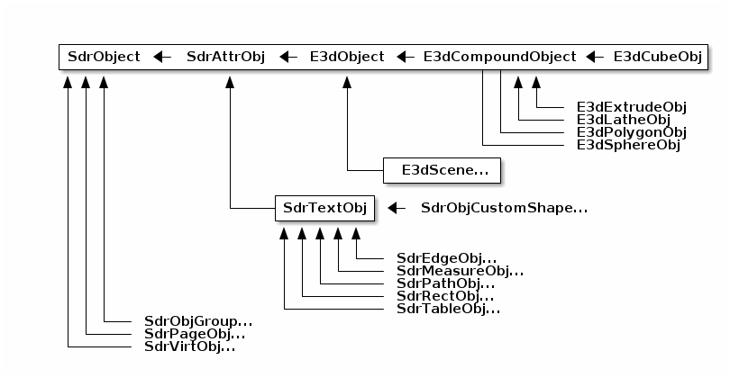
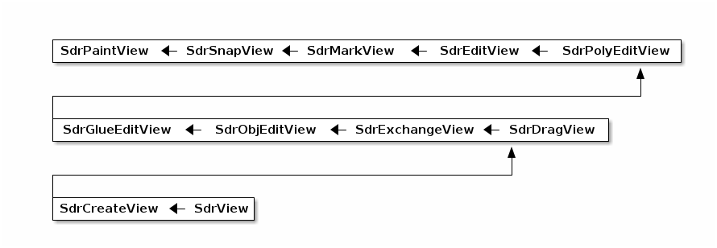
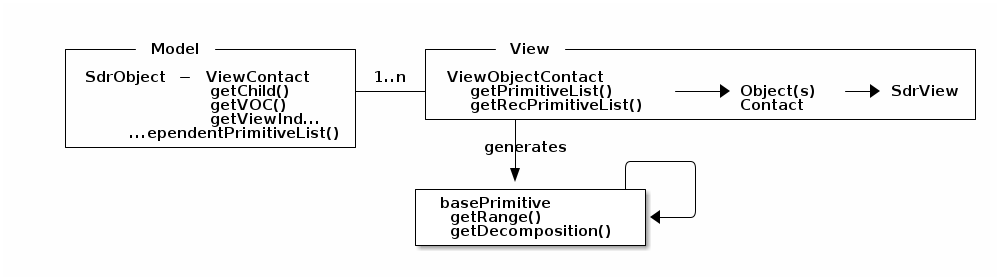

Contains graphics related helper code. Lots of the draw and impress code is in this shared library.
xoutdev
this is where a lot of wht work would happen to move to the canvas. (what does that mean?)
svdraw
transparent gradient stuff. [seriously? surely much more, too]
The shapes you can see in LibreOffice (like rectangle, etc.) are SdrObjects. They are declared as a hierarchy:

The above is incomplete of course.
Copied from svdview.hxx:
First of all the app creates a SdrModel.
Then it opens a Win and creates a SdrView.
ShowSdrPage() announces a page at SdrView.
It's possible to show SdrView in any Wins at once.
SdrView can show as many Wins as it wants at once. Pages are announced
or checked out with the help of ShowSdrPage()/HideSdrPage(). For every announced
page there is a SdrPageView instance in container aPages. If more than one page
is showed, you have to pay attention that the offset parameter of ShowSdrPage()
is conformed to the size of the page (to prevent overlapping of two pages).
SdrView itself is inherited from many objects in a chain of inheritance (all
that starts with SdrPaintView - that is itself inherited from few classes
too):

From SdrView on, it is not flat, but a real hierarchy again.
See drawinglayer/README.md for general information about drawinglayer.
Below is the class diagram that comes from http://www.openoffice.org/marketing/ooocon2006/presentations/wednesday_g11.odp, slide number 6.

For SdrObjects, there are own DrawingLayer primitives in
svx/source/sdr/primitive2d
The ViewContact / ViewObject / ViewObjectContact are in svx/source/sdr/contact
Decomposes the SdrObjects, and does all sort of operations on them.
If the number of visualizable objects (e.g. SdrObjects) is X, and the number of
SdrViews is Y, then:
X ViewContact instances (1:1 relation with a visualizable object)Y ObjectContact instances (1:1 relation with an SdrView)X*Y ViewObjecContact instances (1:N relation to both
visualizable objects and SdrViews)